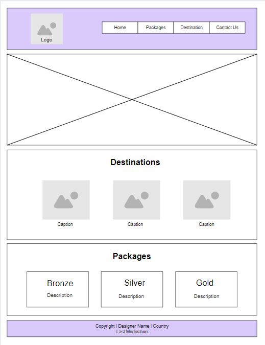

Site Name
Location of Travel: Rwanda - The Land of a Thousand Hills
This name was selected to reflect Rwanda's natural beauty and tourism potential. The site aims to promote Rwanda as a prime travel destination.
Site Purpose
The purpose of the site is to provide travel guides, tourist information, and cultural insights for visitors planning to explore Rwanda. Additionally, the site offers a customizable itinerary form for visitors.
Scenarios
- Scenario 1: What are the must-see destinations for a first-time visitor to Rwanda?
- Scenario 2: How can I find safe and reliable accommodations during my stay in Rwanda?
Color Schema
- Primary Color: Deep Green (#006400) - used for headers and navigation.
- Secondary Color: Soft Beige (#F5F5DC) - used for background sections.
Typography
- Headings: Lora (Serif)
- Body Text: Roboto (Sans-serif)
Wireframes
Below are the wireframes for both mobile and desktop views of the homepage:
